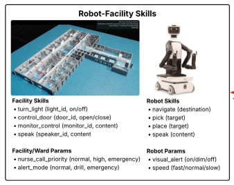
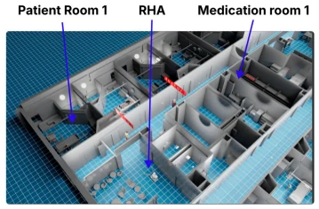
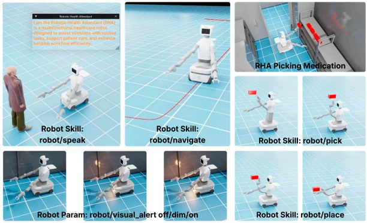

LLM-Orchestrated Framework for Multifunctional Robotic Health Attendant (RHA) in Healthcare Environments
Kyungki Kim, Irfan Gazi, John Windle, Christian Haas, Melissa Christian, Tom Windle, Nicholas Armstrong, Logan Doorlag, Tuankhanh Dao
Applied Sciences 16(11), 5320 · 2026
Abstract
Despite recent advances in healthcare robotics, most existing systems remain limited to single-purpose functions and lack the flexibility to collaborate dynamically with clinicians and facility systems. To address these limitations, this study presents an LLM-orchestrated framework for a multifunctional Robotic Health Attendant (RHA) that enables robot actions and environment interactions to be coordinated in healthcare environments. Within this framework, the RHA functions as a multifunctional nursing assistant capable of performing physical, communicative, and informational tasks through natural-language interaction. Tasks are expressed in natural language and decomposed into coordinated behaviors across three functional branches: physical, for navigation, object manipulation, and delivering medication; communicational, for dialog with patients and clinicians; and informational, for retrieving and summarizing clinical knowledge, such as patient education on complex heart transplant procedures. The framework integrates multiple Large Language Models (LLMs) and sensing nodes to combine facility data, patient information, and clinician commands, enabling robots and building systems to act in a context-aware manner through coordinated task execution across robotic and environmental components. Implemented in a simulated environment, the framework demonstrates the feasibility of executing representative tasks through LLM-based orchestration, serving as a proof-of-concept toward integrated robotic assistance in healthcare settings.
Framework
The LLM plans with two sets of actions: facility skills that control the building, such as lights, doors and monitors, and robot skills to navigate, pick, place and speak. The framework was tested in a simulated hospital ward with patient rooms, a corridor and a medication room.


Representative Tasks
The robot speaks to a patient, follows a planned path, picks a medication box in the medication room, switches its visual alert and places the box at its destination.

BibTeX
@article{kim2026rha,
title = {LLM-Orchestrated Framework for Multifunctional Robotic Health
Attendant (RHA) in Healthcare Environments},
author = {Kim, Kyungki and Gazi, Irfan and Windle, John and Haas, Christian
and Christian, Melissa and Windle, Tom and Armstrong, Nicholas
and Doorlag, Logan and Dao, Tuankhanh},
journal = {Applied Sciences},
volume = {16},
number = {11},
pages = {5320},
year = {2026},
doi = {10.3390/app16115320}
}